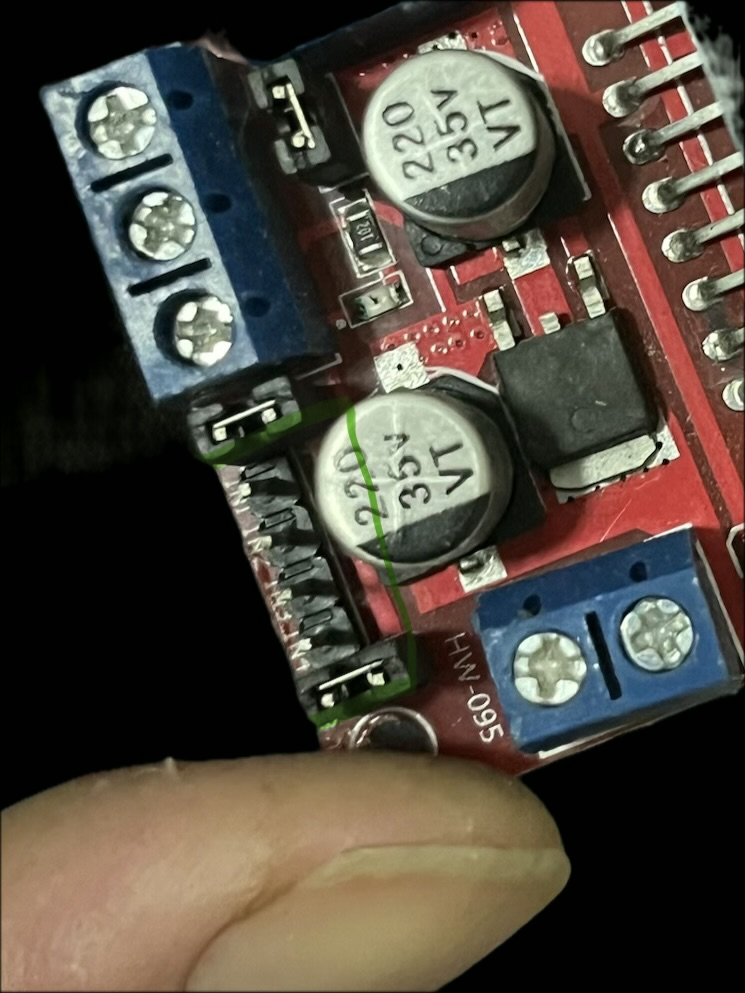
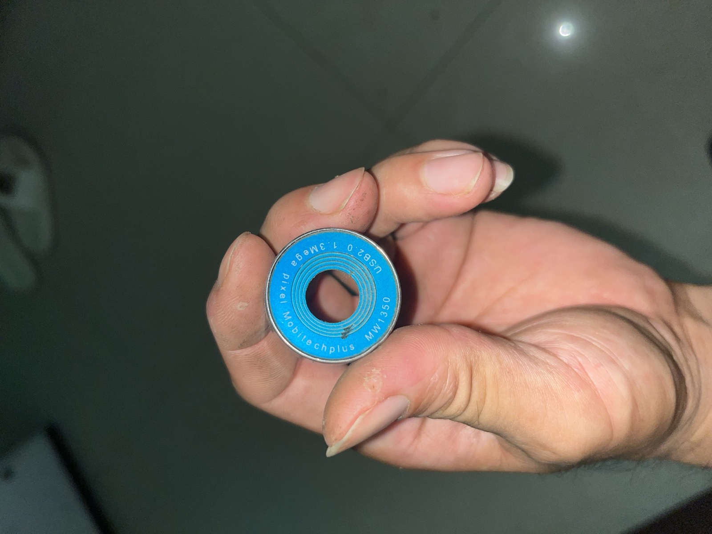
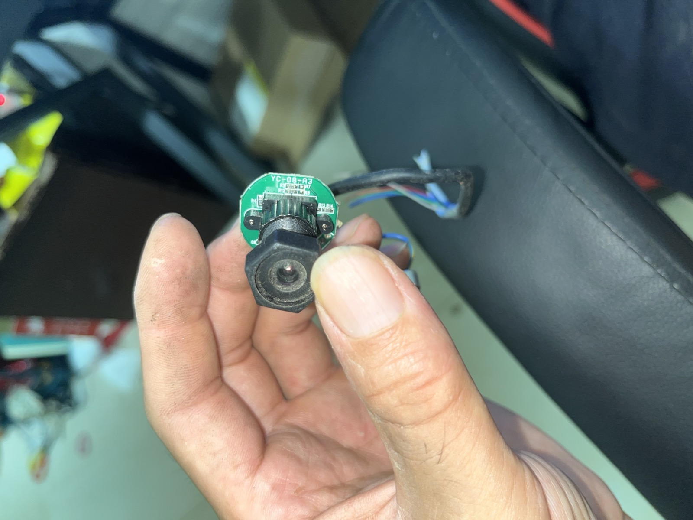
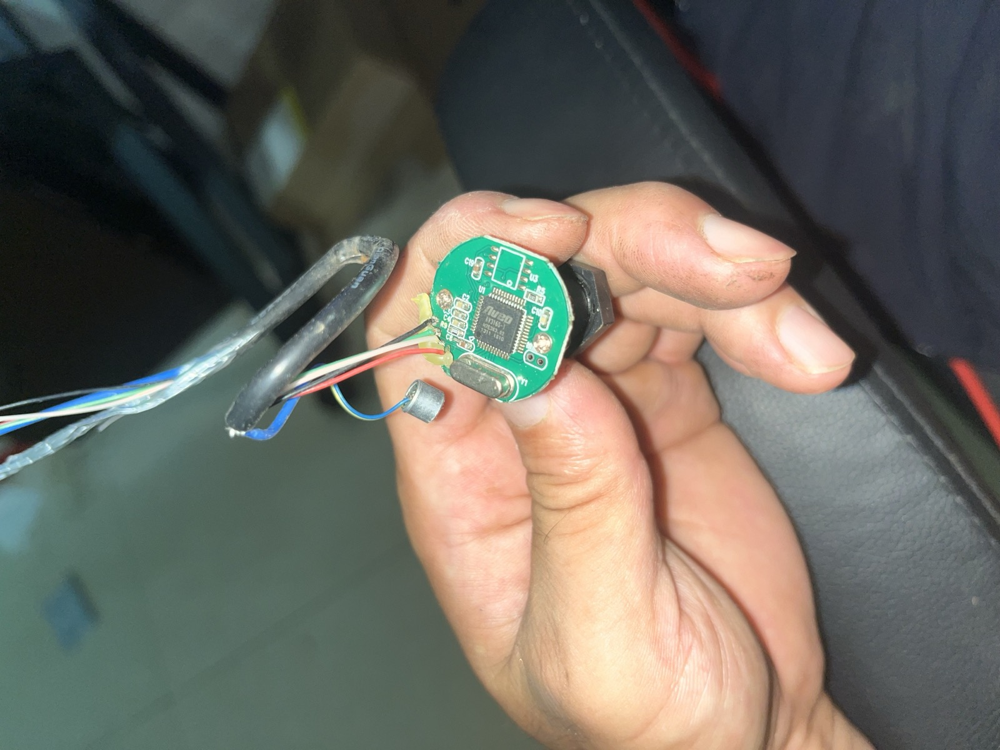
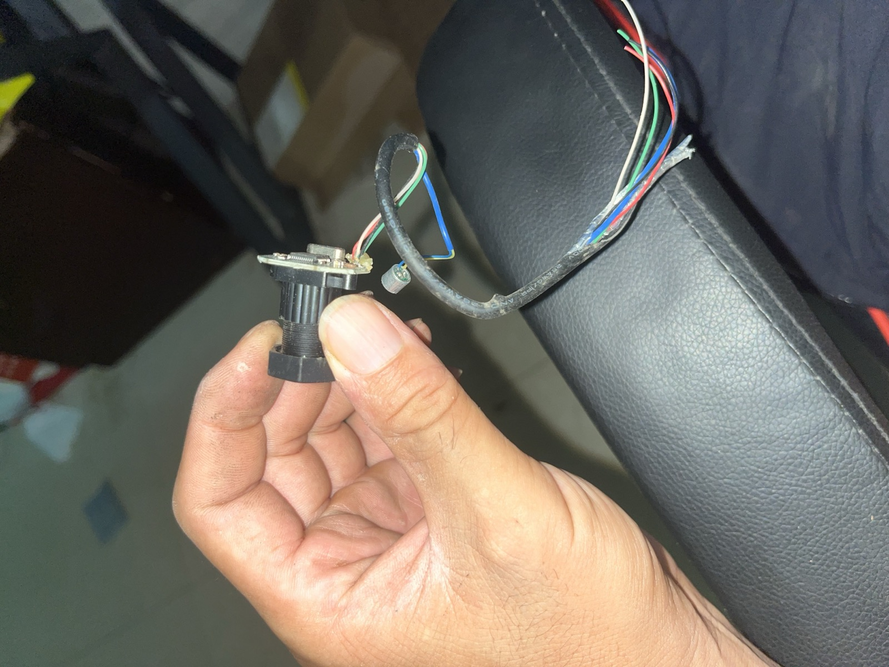

ESP8266 双电机 Wi-Fi 遥控船
本机手册 · 2026-08-20 · 代码与照片都在这个仓库里。双击本文件即可离线阅读。
GitHub：lixyd/esp8266-wifi-boat（公开）
1. 这是什么
NodeMCU V3（ESP8266）开热点，手机网页遥控两只减速电机。驱动是 L298N（HW-095）。现在双电机已接，网页能调速，电池可以同时给驱动和板子供电。
| 热点 | wifi-boat |
|---|---|
| 密码 | 12345678 |
| 控制页 | http://192.168.4.1/ |
| 板型 | NodeMCU 1.0 (ESP-12E)，FQBN esp8266:esp8266:nodemcuv2 |
| 串口 | /dev/cu.usbserial-10 · CH340 · VID 1A86 PID 7523 |
| 本仓库 | ~/Desktop/esp8266-wifi-boat |
无人机是另一套东西（125mm / 8520）。船上的板、L298N、减速电机、电池、摄像头一律不拆去飞。
2. 已买件
| 件 | 规格（按实物） | 数量 | 状态 |
|---|---|---|---|
| 开发板 | ESP8266 串口 wifi 模块 NodeMCU Lua V3 物联网开发板 CH340，USB-C | 1 | 船上在用 |
| 数据线 | USB-C，必须能传数据 | 1 | 烧录用 |
| 驱动 | L298N 双路，板号 HW-095，两颗 220μF 35V | 1 | 已接线 |
| 电机 | 直流减速电机（带齿轮箱） | 2 | 左 OUT1/2，右 OUT3/4 |
| 电池 | 7.4V（2S）或 12V 均可。螺丝印 12V 不代表必须 12 伏 | 1 | 已供电；空过会蜂鸣 |
| 摄像头 | Mobilechplus MW1350 USB2.0 130 万像素，圆板 YC-08-A3 | 1 | 不能接这块 ESP |
| 船体 / 桨 | 未拍型号 | ? | 未确认 |
本机软件：Arduino IDE 2.3.10 arm64、arduino-cli 1.5.1、esp8266 核心 3.1.2。CH340 驱动不要再装。
以后若还买：真要手机看画面再买 ESP32-CAM；烧了再买备用电机。不要为船再买空心杯、1S、飞控。
3. 怎么开船
- 电池正极 → L298N +12V，负极 → L298N GND。USB 先拔掉。
- 手机连热点 wifi-boat / 12345678。
- 浏览器打开
http://192.168.4.1/（部分手机会自动弹出）。 - 先点「停止」，再点前进 / 左转 / 右转。特慢是脉冲爬行，慢 40%，快 90%。
网页按钮对应接口 /api/cmd?c=forward（还有 backward、left、right、uturn、stop、crawl、slow、fast）。
4. 接线

绿框 6 针 → NodeMCU
| L298N | NodeMCU | GPIO | 作用 |
|---|---|---|---|
| ENA | D5 | 14 | 左速度 PWM。跳线帽已拔，不要再接到 +5V |
| IN1 | D1 | 5 | 左方向 |
| IN2 | D2 | 4 | 左方向 |
| IN3 | D7 | 13 | 右方向 |
| IN4 | D8 | 15 | 右方向。不要用 D0，反转会停 |
| ENB | D6 | 12 | 右速度 PWM。跳线帽已拔 |
| GND | GND | — | 必须共地 |
电源与电机
电池正极 ──→ L298N +12V
电池负极 ──→ L298N GND ──→ NodeMCU GND
L298N +5V ──→ NodeMCU VIN（或 5V/VU） 禁止接到 3V3
OUT1 / OUT2 → 左电机
OUT3 / OUT4 → 右电机
三个螺丝旁那颗没字的小跳线帽戴着（板载 5V 稳压）。ENA/ENB 两颗帽子拔掉。不要把电池 12V 接到 5V 螺丝。不要 USB 和电池同时给 ESP。
桨转反了：只对调那一侧 OUT 的两根线。3V3、A0、D3、D4 都不要接到 L298N。
5. 油门
PWM 范围 0–1023，频率 1 kHz。连续低于约 75% 常常只叫不转（L298N 压降）。
| 档 | 网页 | 实际 |
|---|---|---|
| 特慢 | crawl | 每 400ms 给 20ms、85%（最低可转 75%+10%）的脉冲 |
| 慢 | slow | 连续 40% |
| 快 | fast | 连续 90% |
| 转弯 | left / right | 内侧 50%、外侧 80%（相对当前档） |
6. 编译烧录
cd ~/Desktop/esp8266-wifi-boat ./scripts/compile.sh # 只编译 ./scripts/upload.sh # 编译并烧到当前 CH340 串口
接了 L298N 后 115200 烧录容易失败，脚本固定 57600。串口监视器在 IDE「查看」菜单，波特率 115200。
compile.sh
#!/bin/zsh # 只编译，不烧录。用来确认代码能通过。 set -euo pipefail ROOT="$(cd "$(dirname "$0")/.." && pwd)" SKETCH="$ROOT/firmware/wifi_boat" FQBN="esp8266:esp8266:nodemcuv2:baud=57600" echo "编译 sketch: $SKETCH" echo "板型 FQBN : $FQBN" arduino-cli compile --fqbn "$FQBN" --warnings default "$SKETCH" echo "编译成功"
upload.sh
#!/bin/zsh
# 编译并烧录到当前插着的 NodeMCU。
set -euo pipefail
ROOT="$(cd "$(dirname "$0")/.." && pwd)"
SKETCH="$ROOT/firmware/wifi_boat"
# 接了 L298N/电池后高速烧录容易失败，固定 57600
FQBN="esp8266:esp8266:nodemcuv2:baud=57600"
# 自动找 CH340 串口。如果插了多块板，请改成明确的设备名。
PORT="$(ls /dev/cu.usbserial* 2>/dev/null | head -n 1 || true)"
if [[ -z "${PORT}" ]]; then
echo "找不到 /dev/cu.usbserial* ，请检查 USB 线和 CH340 是否被识别。"
echo "排查：ls /dev/cu.* 以及拔掉再插一次数据线。"
exit 1
fi
echo "编译并烧录"
echo " sketch : $SKETCH"
echo " FQBN : $FQBN"
echo " 串口 : $PORT"
arduino-cli compile --fqbn "$FQBN" --warnings default "$SKETCH"
arduino-cli upload --fqbn "$FQBN" --port "$PORT" "$SKETCH"
echo "烧录完成。板载蓝灯应开始闪烁。"
echo "看串口输出：arduino-cli monitor -p $PORT -c baudrate=115200"
7. 摄像头（接不上这块 ESP）
外壳铭牌：USB2.0 1.3Mega Pixel · Mobilechplus MW1350。圆板丝印 YC-08-A3。这是 USB 免驱摄像头，ESP8266 没有 USB 主机。
| 线色 | USB 脚 |
|---|---|
| 红 | +5V |
| 白 | D− |
| 绿 | D+ |
| 黑 | GND |
| 黄 / 蓝 | 驻极体麦，不是给 ESP ADC 的 |
不要把 D+/D− 焊到 GPIO。以后要手机看画面另买 ESP32-CAM。




8. 程序（仓库当前文件）
入口 firmware/wifi_boat/。改油门改 config.h，改接线改同一文件里的 PIN_*。
config.h
/* * config.h * 全项目配置集中放这里。 * * 当前阶段：第三阶段 * 已定义 L298N 引脚和 Motor 类，网页指令会改 GPIO。 * 还没有接线，电机不会转。第四阶段才接 L298N。 */ #ifndef WIFI_BOAT_CONFIG_H #define WIFI_BOAT_CONFIG_H #define SERIAL_BAUD 115200 #define WIFI_AP_SSID "wifi-boat" #define WIFI_AP_PASSWORD "12345678" #define WIFI_AP_CHANNEL 1 #define WIFI_AP_MAX_CONN 4 #define WEB_SERVER_PORT 80 /* * L298N 接线表（第四阶段才动手，现在只写进程序） * * NodeMCU 丝印 GPIO L298N * D5 14 ENA 左电机速度（PWM） * D1 5 IN1 左电机方向 * D2 4 IN2 左电机方向 * D6 12 ENB 右电机速度（PWM） * D7 13 IN3 右电机方向 * D8 15 IN4 右电机方向 * * 不用这些脚的原因： * D3/GPIO0 烧录按键，启动模式相关 * D4/GPIO2 板载 LED，启动模式相关 * D0/GPIO16 NodeMCU 上经常拉不出高电平，反转会变成停止 */ #define PIN_ENA 14 #define PIN_IN1 5 #define PIN_IN2 4 #define PIN_ENB 12 #define PIN_IN3 13 #define PIN_IN4 15 // 慢≤40、快=90。特慢用脉冲：每次用「刚能转的最低油门+10%」顶一下。 #define MOTOR_PWM_MAX 1023 #define MOTOR_PWM_FREQ_HZ 1000 #define MOTOR_SPEED_SLOW 40 #define MOTOR_SPEED_FAST 90 #define MOTOR_SPEED_DEFAULT MOTOR_SPEED_SLOW // L298N+减速电机大约 75% 才转得动。脉冲里用 75+10=85%。 #define MOTOR_MIN_SPIN_PCT 75 #define MOTOR_CRAWL_PULSE_PCT (MOTOR_MIN_SPIN_PCT + 10) #define MOTOR_CRAWL_PERIOD_MS 400 #define MOTOR_CRAWL_ON_MS 20 #define MOTOR_TURN_INNER 50 #define MOTOR_TURN_OUTER 80 #endif
wifi_boat.ino
/*
* wifi_boat.ino
* ESP8266 双电机 Wi-Fi 遥控船 · 主程序入口
*
* 当前阶段：第三阶段
* 网页按钮会调用 Motor，GPIO 按 L298N 定义动作。
* 还没有接线，电机不会转。不要接 L298N。
*
* 手机：连 wifi-boat / 12345678 → http://192.168.4.1/
* 电脑串口：Arduino IDE 菜单「查看」→「串口监视器」，115200
*/
#include <Arduino.h>
#include "config.h"
#include "src/motor/Motor.h"
#include "src/web/WebControl.h"
Motor motors;
WebControl web;
unsigned long lastBlinkMs = 0;
bool ledOn = false;
void setup() {
Serial.begin(SERIAL_BAUD);
delay(200);
pinMode(LED_BUILTIN, OUTPUT);
digitalWrite(LED_BUILTIN, HIGH);
motors.begin();
web.begin(&motors);
}
void loop() {
web.loop();
motors.loop();
const unsigned long now = millis();
if (now - lastBlinkMs >= 500) {
lastBlinkMs = now;
ledOn = !ledOn;
digitalWrite(LED_BUILTIN, ledOn ? LOW : HIGH);
}
}
src/motor/Motor.h
/*
* 特慢：脉冲（最低可转油门+10%）。慢 40%。快 90%。
*/
#ifndef WIFI_BOAT_MOTOR_H
#define WIFI_BOAT_MOTOR_H
#include <Arduino.h>
#include "../../config.h"
class Motor {
public:
void begin();
void loop();
void setSpeed(int speed);
void forward();
void backward();
void left();
void right();
void uturn();
void stop();
void apply(const String& cmd);
private:
int speed_ = MOTOR_SPEED_DEFAULT;
bool crawl_ = false;
String lastMove_ = "stop";
int leftDir_ = 0;
int rightDir_ = 0;
int leftPct_ = 0;
int rightPct_ = 0;
void setMix(int leftDir, int leftPct, int rightDir, int rightPct);
void refresh();
void driveLeft(int dir, int pwm);
void driveRight(int dir, int pwm);
int hwPwm(int pct) const;
void writeEnable(uint8_t pin, int hw);
int turnInner() const;
int turnOuter() const;
};
#endif
src/motor/Motor.cpp
#include "Motor.h"
void Motor::begin() {
pinMode(PIN_IN1, OUTPUT);
pinMode(PIN_IN2, OUTPUT);
pinMode(PIN_IN3, OUTPUT);
pinMode(PIN_IN4, OUTPUT);
pinMode(PIN_ENA, OUTPUT);
pinMode(PIN_ENB, OUTPUT);
analogWriteRange(MOTOR_PWM_MAX);
analogWriteFreq(MOTOR_PWM_FREQ_HZ);
speed_ = MOTOR_SPEED_DEFAULT;
crawl_ = false;
stop();
Serial.println(F("Motor: 特慢=脉冲(最低+10%) 慢40 快90"));
}
void Motor::loop() {
if (crawl_ && lastMove_ != "stop") {
refresh();
}
}
void Motor::setSpeed(int speed) {
if (speed < 0) speed = 0;
if (speed > 100) speed = 100;
speed_ = speed;
crawl_ = false;
Serial.print(F("Motor: 档 "));
Serial.println(speed_);
}
int Motor::hwPwm(int pct) const {
if (pct <= 0) return 0;
if (pct >= 100) return MOTOR_PWM_MAX;
return pct * MOTOR_PWM_MAX / 100;
}
void Motor::writeEnable(uint8_t pin, int hw) {
if (hw <= 0) {
analogWrite(pin, 0);
digitalWrite(pin, LOW);
} else if (hw >= MOTOR_PWM_MAX) {
analogWrite(pin, 0);
digitalWrite(pin, HIGH);
} else {
analogWrite(pin, hw);
}
}
void Motor::driveLeft(int dir, int pwm) {
const int hw = hwPwm(pwm);
if (dir > 0) {
digitalWrite(PIN_IN1, HIGH);
digitalWrite(PIN_IN2, LOW);
writeEnable(PIN_ENA, hw);
} else if (dir < 0) {
digitalWrite(PIN_IN1, LOW);
digitalWrite(PIN_IN2, HIGH);
writeEnable(PIN_ENA, hw);
} else {
digitalWrite(PIN_IN1, LOW);
digitalWrite(PIN_IN2, LOW);
writeEnable(PIN_ENA, 0);
}
}
void Motor::driveRight(int dir, int pwm) {
const int hw = hwPwm(pwm);
if (dir > 0) {
digitalWrite(PIN_IN3, HIGH);
digitalWrite(PIN_IN4, LOW);
writeEnable(PIN_ENB, hw);
} else if (dir < 0) {
digitalWrite(PIN_IN3, LOW);
digitalWrite(PIN_IN4, HIGH);
writeEnable(PIN_ENB, hw);
} else {
digitalWrite(PIN_IN3, LOW);
digitalWrite(PIN_IN4, LOW);
writeEnable(PIN_ENB, 0);
}
}
void Motor::setMix(int leftDir, int leftPct, int rightDir, int rightPct) {
leftDir_ = leftDir;
rightDir_ = rightDir;
leftPct_ = leftPct;
rightPct_ = rightPct;
refresh();
}
void Motor::refresh() {
if (lastMove_ == "stop") {
driveLeft(0, 0);
driveRight(0, 0);
return;
}
if (crawl_) {
const bool pulseOn = (millis() % MOTOR_CRAWL_PERIOD_MS) < MOTOR_CRAWL_ON_MS;
if (!pulseOn) {
writeEnable(PIN_ENA, 0);
writeEnable(PIN_ENB, 0);
return;
}
// 脉冲内：最低可转 +10%。转弯外侧略高、内侧略低。
int lp = MOTOR_CRAWL_PULSE_PCT;
int rp = MOTOR_CRAWL_PULSE_PCT;
if (leftPct_ < rightPct_) lp = MOTOR_MIN_SPIN_PCT;
if (rightPct_ < leftPct_) rp = MOTOR_MIN_SPIN_PCT;
driveLeft(leftDir_, lp);
driveRight(rightDir_, rp);
return;
}
driveLeft(leftDir_, leftPct_);
driveRight(rightDir_, rightPct_);
}
int Motor::turnInner() const {
return speed_ * MOTOR_TURN_INNER / 100;
}
int Motor::turnOuter() const {
return speed_ * MOTOR_TURN_OUTER / 100;
}
void Motor::forward() {
setMix(1, speed_, 1, speed_);
}
void Motor::backward() {
setMix(-1, speed_, -1, speed_);
}
void Motor::left() {
setMix(1, turnInner(), 1, turnOuter());
}
void Motor::right() {
setMix(1, turnOuter(), 1, turnInner());
}
void Motor::uturn() {
setMix(-1, turnInner(), 1, turnOuter());
}
void Motor::stop() {
lastMove_ = "stop";
leftDir_ = 0;
rightDir_ = 0;
leftPct_ = 0;
rightPct_ = 0;
driveLeft(0, 0);
driveRight(0, 0);
}
void Motor::apply(const String& cmd) {
if (cmd == "crawl") {
crawl_ = true;
speed_ = MOTOR_CRAWL_PULSE_PCT;
Serial.println(F("Motor: 特慢 脉冲 最低+10%"));
if (lastMove_ != "stop") apply(lastMove_);
return;
}
if (cmd == "slow") {
setSpeed(MOTOR_SPEED_SLOW);
if (lastMove_ != "stop") apply(lastMove_);
return;
}
if (cmd == "fast") {
setSpeed(MOTOR_SPEED_FAST);
if (lastMove_ != "stop") apply(lastMove_);
return;
}
if (cmd == "forward") {
lastMove_ = cmd;
forward();
} else if (cmd == "backward") {
lastMove_ = cmd;
backward();
} else if (cmd == "left") {
lastMove_ = cmd;
left();
} else if (cmd == "right") {
lastMove_ = cmd;
right();
} else if (cmd == "uturn") {
lastMove_ = cmd;
uturn();
} else {
stop();
}
Serial.print(F(" L="));
Serial.print(leftPct_);
Serial.print(F(" R="));
Serial.print(rightPct_);
Serial.print(F(" crawl="));
Serial.println(crawl_ ? 1 : 0);
}
src/web/WebControl.h
/*
* WebControl.h
* 热点 + 网页控制台。
* 第三阶段起：按钮会调用 Motor，但尚未接线。
*/
#ifndef WIFI_BOAT_WEB_CONTROL_H
#define WIFI_BOAT_WEB_CONTROL_H
#include <Arduino.h>
#include <ESP8266WiFi.h>
#include <ESP8266WebServer.h>
#include <DNSServer.h>
#include "../../config.h"
#include "../motor/Motor.h"
class WebControl {
public:
void begin(Motor* motors);
void loop();
private:
ESP8266WebServer server_;
DNSServer dns_;
IPAddress apIp_;
Motor* motors_ = nullptr;
void handleRoot();
void handleCommand();
void handleNotFound();
void printCommand(const String& cmd);
};
#endif
src/web/WebControl.cpp
#include "WebControl.h"
#include "page.html.h"
void WebControl::begin(Motor* motors) {
motors_ = motors;
apIp_ = IPAddress(192, 168, 4, 1);
WiFi.persistent(false);
WiFi.setSleepMode(WIFI_NONE_SLEEP);
WiFi.mode(WIFI_AP);
WiFi.softAPConfig(apIp_, apIp_, IPAddress(255, 255, 255, 0));
const bool ok = WiFi.softAP(WIFI_AP_SSID, WIFI_AP_PASSWORD, WIFI_AP_CHANNEL, false, WIFI_AP_MAX_CONN);
Serial.println();
Serial.println(F("================================"));
Serial.println(F("wifi_boat 第三阶段 Motor + 网页"));
Serial.println(F("GPIO 会动作，但还没接 L298N，桨不会转"));
Serial.print(F("热点名称: "));
Serial.println(WIFI_AP_SSID);
Serial.print(F("热点密码: "));
Serial.println(WIFI_AP_PASSWORD);
Serial.print(F("控制页: http://"));
Serial.println(apIp_);
Serial.print(F("softAP: "));
Serial.println(ok ? F("OK") : F("失败"));
Serial.println(F("================================"));
// 把所有域名解析到 192.168.4.1，手机连上后容易弹出登录页。
dns_.start(53, "*", apIp_);
server_.on("/", HTTP_GET, [this]() { handleRoot(); });
server_.on("/api/cmd", HTTP_GET, [this]() { handleCommand(); });
server_.on("/api/ping", HTTP_GET, [this]() {
server_.send(200, "text/plain", "pong");
});
// iOS / Android 探测「需要登录的热点」时会访问这些地址
server_.on("/hotspot-detect.html", HTTP_GET, [this]() { handleRoot(); });
server_.on("/generate_204", HTTP_GET, [this]() { handleRoot(); });
server_.on("/ncsi.txt", HTTP_GET, [this]() { handleRoot(); });
server_.on("/canonical.html", HTTP_GET, [this]() { handleRoot(); });
server_.onNotFound([this]() { handleNotFound(); });
server_.begin(WEB_SERVER_PORT);
}
void WebControl::loop() {
dns_.processNextRequest();
server_.handleClient();
yield();
}
void WebControl::handleRoot() {
server_.send_P(200, "text/html; charset=utf-8", CONTROL_PAGE);
}
void WebControl::handleCommand() {
String cmd = server_.arg("c");
cmd.toLowerCase();
printCommand(cmd);
if (motors_) {
motors_->apply(cmd);
}
String text = cmd;
if (cmd == "forward") text = "前进";
else if (cmd == "backward") text = "后退";
else if (cmd == "left") text = "左转 左50 右80";
else if (cmd == "right") text = "右转 左80 右50";
else if (cmd == "uturn") text = "掉头 内50 外80";
else if (cmd == "stop") text = "停止";
else if (cmd == "crawl") text = "特慢 脉冲(最低+10%)";
else if (cmd == "slow") text = "慢 ≤40%";
else if (cmd == "fast") text = "快 90%";
else text = "未知指令: " + cmd;
String json = "{\"ok\":true,\"cmd\":\"" + cmd + "\",\"text\":\"" + text + "\"}";
server_.send(200, "application/json; charset=utf-8", json);
}
void WebControl::handleNotFound() {
// 没匹配到的地址也给控制页，方便手机强制门户弹出。
handleRoot();
}
void WebControl::printCommand(const String& cmd) {
Serial.print(F("[CMD] "));
if (cmd == "forward") Serial.println(F("前进 forward"));
else if (cmd == "backward") Serial.println(F("后退 backward"));
else if (cmd == "left") Serial.println(F("左转 left"));
else if (cmd == "right") Serial.println(F("右转 right"));
else if (cmd == "uturn") Serial.println(F("掉头 uturn"));
else if (cmd == "stop") Serial.println(F("停止 stop"));
else if (cmd == "crawl") Serial.println(F("速度 特慢 脉冲"));
else if (cmd == "slow") Serial.println(F("速度 慢 40%"));
else if (cmd == "fast") Serial.println(F("速度 快 90%"));
else {
Serial.print(F("未知 "));
Serial.println(cmd);
}
}
src/web/page.html.h
/*
* 控制页 HTML，放 PROGMEM 节省 RAM。
* 手机浏览器打开后是大按钮，点一下发 /api/cmd?c=xxx。
*/
#ifndef WIFI_BOAT_PAGE_HTML_H
#define WIFI_BOAT_PAGE_HTML_H
#include <Arduino.h>
static const char CONTROL_PAGE[] PROGMEM = R"HTML(
<!DOCTYPE html>
<html lang="zh-CN">
<head>
<meta charset="utf-8">
<meta name="viewport" content="width=device-width,initial-scale=1,viewport-fit=cover">
<meta name="apple-mobile-web-app-capable" content="yes">
<title>遥控船</title>
<style>
:root { color-scheme: dark; }
* { box-sizing: border-box; -webkit-tap-highlight-color: transparent; }
body {
margin: 0; min-height: 100vh; font-family: -apple-system, sans-serif;
background: #0b1220; color: #e8eefc; display: flex; flex-direction: column;
align-items: center; padding: 20px 16px 32px;
}
h1 { font-size: 20px; font-weight: 650; margin: 8px 0 4px; }
.sub { color: #8aa0c4; font-size: 13px; margin-bottom: 18px; }
.grid {
width: min(360px, 100%);
display: grid;
grid-template-columns: 1fr 1fr 1fr;
gap: 12px;
}
button {
border: 0; border-radius: 16px; padding: 18px 8px;
font-size: 18px; font-weight: 650; color: #fff;
background: #24344f; min-height: 72px;
}
button:active { transform: scale(0.97); filter: brightness(1.15); }
.fwd { grid-column: 2; background: #1f6feb; }
.left { grid-column: 1; }
.right { grid-column: 3; }
.back { grid-column: 2; }
.uturn { grid-column: 1 / span 3; background: #3d4f6f; }
.stop { grid-column: 1 / span 3; background: #c62828; min-height: 84px; font-size: 22px; }
.spd { min-height: 52px; font-size: 15px; background: #1a283c; }
.note { width: min(360px, 100%); color: #8aa0c4; font-size: 12px; line-height: 1.45; margin: 14px 0 0; }
#status {
margin-top: 16px; min-height: 24px; color: #9ad07a; font-size: 15px;
}
</style>
</head>
<body>
<h1>Wi-Fi 遥控船</h1>
<div class="sub">特慢=脉冲爬行 · 慢40% · 快90%</div>
<div class="grid">
<button class="fwd" onclick="go('forward')">前进</button>
<button class="left" onclick="go('left')">左转</button>
<button class="right" onclick="go('right')">右转</button>
<button class="back" onclick="go('backward')">后退</button>
<button class="uturn" onclick="go('uturn')">掉头</button>
<button class="stop" onclick="go('stop')">停止</button>
<button class="spd" onclick="go('crawl')">特慢</button>
<button class="spd" onclick="go('slow')">慢</button>
<button class="spd" onclick="go('fast')">快</button>
</div>
<div class="note">特慢：每 0.4 秒给 20ms「刚能转+10%」的脉冲，桨会一顿一顿往前。连续 10% 油门转不动。慢 40%，快 90%。</div>
<div id="status">已连接 · 慢</div>
<script>
async function go(cmd) {
const el = document.getElementById('status');
el.textContent = '发送中…';
try {
const r = await fetch('/api/cmd?c=' + cmd);
const j = await r.json();
el.textContent = j.text || cmd;
} catch (e) {
el.textContent = '发送失败，确认还连着 wifi-boat';
}
}
setInterval(async () => {
try { await fetch('/api/ping'); }
catch (e) {
document.getElementById('status').textContent = '已断开，请重连 wifi-boat';
}
}, 2500);
</script>
</body>
</html>
)HTML";
#endif
9. 踩过的坑
| 现象 | 原因 / 处理 |
|---|---|
| 反转变成停止 | IN4 接到了 D0。改接到 D8（GPIO15） |
| 烧录 verify fail / Invalid head | 接电机后 115200 不稳。改 57600 |
| 慢档几乎是满速 | 不要把 40% 映射到 780–1023。百分比按 0–1023 线性 |
| 10% 连续只蜂鸣 | 低于约 75% 转不动。特慢改成 85% 短脉冲 |
| 点按键蜂鸣不转 | 电池空了 |
| Wi-Fi 一调电机就掉 | 用 WIFI_NONE_SLEEP，PWM 1 kHz，不要乱改 analogWriteRange(100) |
| IDE 找不到串口监视器 | 在「查看」，不在「工具」 |
| 摄像头没画面 | MW1350 是 USB 头，这块板带不了 |